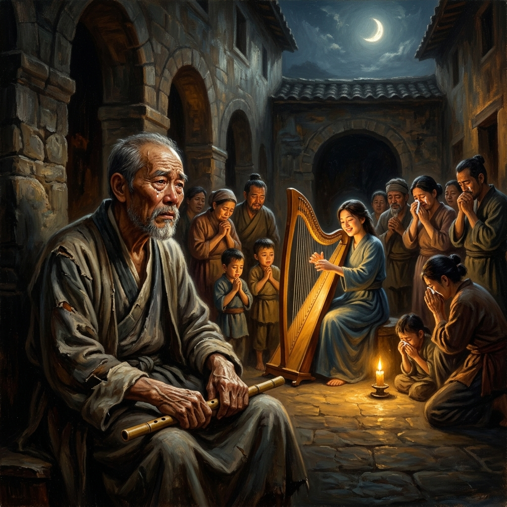
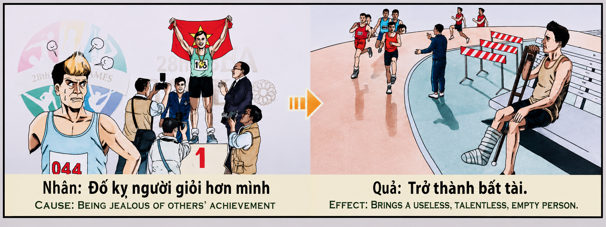

La Envidia de la Excelencia The Envy of Excellence L'Invidia dell'Eccellenza 嫉妒优胜者 حسد التميز Зависть к превосходству Der Neid auf die Exzellenz L'Envie de l'Excellence 優秀さへの嫉妬 A Inveja da Excelência Đố kỵ người giỏi hơn mình
Quien mira con amargura el triunfo del prójimo o maldice el brillo de quien destaca, envenena las raíces de sus propios dones; pues la ley kármica decreta que envidiar la virtud ajena seca las facultades del alma y la condena a la impotencia y la mediocridad. Whoever looks with bitterness upon another's triumph or curses the shine of those who excel poisons the roots of their own gifts; for karmic law decrees that envying another's virtue dries up the soul's faculties and condemns it to helplessness and mediocrity. Chi guarda con amarezza il trionfo del prossimo o maledice lo splendore di chi eccelle, avvelena le radici dei propri doni; poiché la legge karmica decreta che invidiare la virtù altrui prosciuga le facoltà dell'anima e la condanna all'impotenza e alla mediocrità. 凡以苦毒之致视他人之成功、咒诅优秀者之光芒者，皆在毒害自身天赋之根基；业力法则裁定，嫉妒他人之德行必将枯竭自身灵魂之本能，使其堕入软弱与庸碌。 من ينظر بمرارة إلى نجاح القريب أو يلعن بريق من يتفوق، فإنه ياسم جذور مواهبه؛ فإن قانون الكارما يقضي بأن حسد فضيلة الآخرين يجفف قدرات الروح ويحكم عليها بالعجز والمهانة. Тот, кто с горечью смотрит на триумф ближнего или проклинает сияние преуспевающего, отравляет корни собственных даров; ибо закон кармы гласит, что зависть к чужой добродетели иссушает способности души и обрекает ее на бессилие и посредственность. Wer mit Bitterkeit auf den Triumph des Nächsten blickt oder den Glanz des Erfolgreichen verflucht, vergiftet die Wurzeln seiner eigenen Gaben; denn das karmische Gesetz bestimmt, dass der Neid auf fremde Tugend die Fähigkeiten der Seele austrocknet und sie zu Machtlosigkeit und Mittelmäßigkeit verurteilt. Quiconque regarde avec amertume le triomphe du prochain ou maudit l'éclat de celui qui excelle empoisonne les racines de ses propres dons ; car la loi karmique décrète qu'envier la vertu d'autrui dessèche les facultés de l'âme et la condamne à l'impuissance et à la médiocrité. 他人の勝利を苦々しく見つめ、あるいは優れる者の輝きを呪う者は、自らの才能の根を毒することになる。カルマの法則は、他人の美徳を嫉妬することが魂の能力を枯渇させ、無力と凡庸へと追い込むと定めている。 Quem olha com amargura o triunfo do próximo ou amaldiçoa o brilho de quem se destaca, envenena as raízes dos seus próprios dons; pois a lei cármica decreta que invejar a virtude alheia seca as faculdades da alma e a condena à impotência e à mediocridade. Đố kỵ người giỏi hơn mình là tự mình đầu độc rễ cây tài năng của chính mình; bởi vì luật nhân quả ấn định rằng lòng đố kỵ với sự ưu tú của người khác sẽ làm khô héo mọi năng lực của tâm hồn và đày đọa nó vào sự bất tài và bất lực.
El relieve original del templo nos presenta una advertencia contundente sobre los estragos kármicos de la envidia: a la izquierda, en el podio de una competición atlética, un deportista victorioso alza una bandera entre aplausos y flashes, mientras en primer plano otro competidor lo contempla con el rostro sudoroso, amargado y consumido por el odio; a la derecha, la consecuencia kármica se despliega con frialdad: el envidioso aparece sentado en un banco a la orilla de la pista, tullido, con una pierna enyesada y muletas, mirando impotente cómo otros corren hacia la meta. La causa es envidiar al que es superior o más hábil; el efecto es volverse incapaz, torpe y desprovisto de talento (Trở thành bất tài).
La ley del karma revela que los dones espirituales y las habilidades no son concesiones caprichosas, sino el resultado del mérito acumulado y del respeto por la virtud. La envidia es un veneno de doble filo: no puede apagar la luz del victorioso, pero quema las raíces de la capacidad del envidioso. Al resentir el talento ajeno, la mente emite una orden vibratoria de rechazo a la excelencia, y el universo responde cerrando los canales de la inspiración y la destreza.
La primera dimensión de esta enseñanza es la autodestrucción de las facultades y el rechazo a la excelencia. La envidia es una declaración secreta de inferioridad que ataca la armonía cósmica. Cuando una persona sufre ante el bien o el talento del otro, su conciencia genera una frecuencia de aversión hacia el logro. Esa energía negativa regresa al propio ser, bloqueando los centros de creatividad e inteligencia. En existencias futuras, la persona nace con torpeza, falta de talento y limitaciones físicas o mentales que le impiden destacar.
La segunda dimensión profundiza en la ceguera del orgullo que confunde la abundancia con la escasez. El alma envidiosa vive en el engaño de creer que el éxito del prójimo le resta oportunidades a ella. Desconoce que el universo es un océano inagotable de luz donde la gloria de uno no disminuye la del otro. Al cerrar el corazón al regocijo por el triunfo ajeno, el envidioso se aísla de la fuente de la abundancia y se condena a vivir en la penuria de su propia pequeñez.
La tercera dimensión analiza el aislamiento kármico y el papel de espectador tullido. Como ilustra el relieve del templo, quien intentó oscurecer al triunfador termina marginado a la orilla de la vida. La pierna enyesada y las muletas simbolizan la parálisis espiritual y la falta de iniciativa: mientras los virtuosos corren libres hacia la realización, el envidioso queda confinado a mirar desde la distancia, prisionero de su propia amargura e incapacidad.
La cuarta dimensión revela el poder transmutador del regocijo compasivo (Mudita). El antídoto supremo contra la envidia es la capacidad de alegrarse sinceramente por la dicha y el éxito ajenos. Al celebrar la maestría del hermano, la conciencia se sintoniza con la frecuencia de la excelencia. Quien bendice el talento ajeno abre sus propios canales para recibir dones aún mayores, convirtiendo el aplauso sincero en la llave dorada que despierta sus propias virtudes dormidas.
The original relief of the temple presents us with a striking warning about the karmic ravages of envy: on the left, on an athletic competition podium, a victorious athlete raises a flag amidst applause and cameras, while in the foreground another competitor looks on with a sweaty, bitter face consumed by hatred; on the right, the karmic consequence unfolds coldly: the envious man sits on a bench on the side of the track, crippled, with a leg in a cast and crutches, watching helplessly as others run toward the finish line. The cause is envying those who excel; the effect is becoming useless, clumsy, and talentless.
The law of karma reveals that spiritual gifts and abilities are not arbitrary concessions, but the result of accumulated merit and respect for virtue. Envy is a double-edged poison: it cannot extinguish the winner's light, but it burns the roots of the envious person's own capacity. By resenting another's talent, the mind emits a vibratory order rejecting excellence, and the universe responds by closing the channels of inspiration and skill.
The first dimension of this teaching is the self-destruction of faculties and the rejection of excellence. Envy is a secret declaration of inferiority that attacks cosmic harmony. When a person suffers before another's good or talent, their consciousness generates a frequency of aversion toward achievement. That negative energy rebounds onto the self, blocking centers of creativity and intelligence. In future lives, the person is born clumsy, talentless, and restricted by physical or mental limitations.
The second dimension delves into the blindness of pride that confuses abundance with scarcity. The envious soul lives in the delusion of believing that a neighbor's success robs them of opportunity. It fails to realize that the universe is an endless ocean of light where one person's glory does not diminish another's. By closing the heart to rejoicing in another's triumph, the envious person isolates themselves from the source of abundance and condemns themselves to live in the poverty of their own smallness.
The third dimension analyzes karmic isolation and the role of the crippled spectator. As the temple relief illustrates, whoever tried to overshadow the champion ends up sidelined on the margin of life. The cast leg and crutches symbolize spiritual paralysis and lack of initiative: while the virtuous run freely toward realization, the envious person remains confined to watch from a distance, imprisoned by their own bitterness and incompetence.
The fourth dimension reveals the transmuting power of sympathetic joy (Mudita). The supreme antidote to envy is the capacity to rejoice sincerely in another's joy and success. By celebrating a brother's mastery, consciousness tunes into the frequency of excellence. Whoever blesses another's talent opens their own channels to receive even greater gifts, turning sincere applause into the golden key that awakens their own sleeping virtues.
Il rilievo originale del tempio ci presenta un avvertimento incisivo sui devastanti effetti karmici dell'invidia: a sinistra, sul podio di una gara atletica, un atleta vittorioso solleva una bandiera tra applausi e flash, mentre in primo piano un altro concorrente lo osserva con il volto sudato, amareggiato e divorato dall'odio; a destra, la conseguenza karmica si dispiega con freddezza: l'invidioso appare seduto su una panchina a bordo pista, storpio, con una gamba ingessata e le grucce, guardando impotente mentre gli altri corrono verso il traguardo. La causa è invidiare chi è superiore o più abile; l'effetto è diventare incapaci, goffi e privi di talento.
La legge del karma rivela che i doni spirituali e le abilità non sono concessioni capricciose, ma il risultato del merito accumulato e del rispetto per la virtù. L'invidia è un veleno a doppio taglio: non può spegnere la luce del vittorioso, ma brucia le radici della capacità dell'invidioso. Risentendo del talento altrui, la mente emette un ordine vibratorio di rifiuto dell'eccellenza, e l'universo risponde chiudendo i canali dell'ispirazione e dell'abilità.
La prima dimensione di questo insegnamento è l'autodistruzione delle facoltà e il rifiuto dell'eccellenza. L'invidia è una segreta dichiarazione d'inferiorità che attacca l'armonia cosmica. Quando una persona soffre davanti al bene o al talento altrui, la sua coscienza genera una frequenza di avversione verso il successo. Quell'energia negativa ritorna su se stessa, bloccando i centri della creatività e dell'intelligenza. Nelle esistenze future, la persona nasce con goffaggine, mancanza di talento e limitazioni che le impediscono di emergere.
La seconda dimensione approfondisce la cecità dell'orgoglio che confonde l'abbondanza con la scarsità. L'anima invidiosa vive nell'inganno di credere che il successo del prossimo le tolga opportunità. Ignora che l'universo è un oceano inesauribile di luce dove la gloria di uno non diminuisce quella dell'altro. Chiudendo il cuore alla gioia per il trionfo altrui, l'invidioso si isola dalla fonte dell'abbondanza e si condanna a vivere nella miseria della propria piccolezza.
La terza dimensione analizza l'isolamento karmico e il ruolo dello spettatore storpio. Come illustra il rilievo del tempio, chi ha cercato di oscurare il vincitore finisce emarginato ai margini della vita. La gamba ingessata e le grucce simboleggiano la paralisi spirituale e la mancanza di iniziativa: mentre i virtuosi corrono liberi verso la realizzazione, l'invidioso rimane confinato a guardare da lontano, prigioniero della propria amarezza e incapacità.
La quarta dimensione rivela il potere trasmutante della gioia simpatetica (Mudita). L'antidoto supremo all'invidia è la capacità di rallegrarsi sinceramente per la gioia e il successo altrui. Celebrando la maestria del fratello, la coscienza si sintonizza sulla frequenza dell'eccellenza. Chi benedice il talento altrui apre i propri canali per ricevere doni ancora più grandi, trasformando l'applauso sincero nella chiave dorata che risveglia le proprie virtù sopite.
寺庙的原始浮雕为我们呈现了关于嫉妒之业力毁灭的严厉警告：左边，在田径比赛的领奖台上，一位胜利的运动员在掌声与闪光灯中高举国旗，而在前景中，另一位参赛者面带汗水、内心苦毒且被恨意吞噬地凝视着他；右边，业力后果冷酷地展现：嫉妒者坐在跑道旁的长椅上，残废腿部打着石膏，挂着拐杖，无能为力地看着其他人奔向终点。因是嫉妒比自己优秀或更有才能的人；果是变成无能、拙劣且一无所有的庸才（Trở thành bất tài）。
业力法则揭示，精神天赋与能力绝非任性的恩赐，而是长期所积功德与尊重德行的结果。嫉妒是一把双刃剑：它无法熄灭胜利者的光芒，却会焚毁嫉妒者自身能力的根基。当对他人的才华产生怨恨时，心灵便发出了拒绝卓越的振动指令，宇宙则以关闭灵感与才能的通道作为回应。
这一教义的第一维度是本能的自我毁灭与对卓越的拒绝。嫉妒是一种秘密的自卑宣言，攻击着宇宙的和谐。当一个人为他人的善行或才华感到痛苦时，其意识便产生了对成就的厌恶频率。这种负面能量反弹回自身，封锁了创造力与智慧的中心。在未来的转世中，此人出生时便带有笨拙、缺乏才能以及妨碍其脱颖而出的局限。
第二维度深入探讨了混淆匮乏与丰盛的傲慢之盲目。嫉妒的灵魂生活在相信邻舍的成功剥夺了自己机会的错觉中。它不知道宇宙是一个永不干涸的光明海洋，一个人的荣耀绝不会减少另一个人的光彩。通过对他人胜利关闭喜悦的心门，嫉妒者将自己从丰盛的源头中孤立出来，注定生活在自己狭隘的贫瘠中。
第三维度分析了业力的孤立与残废旁观者的角色。正如寺庙浮雕所描绘的那样，妄图遮蔽胜利者光芒的人，最终被边缘化在生活的旁侧。打石膏的腿和拐杖象征着精神的瘫痪与主动性的丧失：当有德之人自由地奔向圆满时，嫉妒者却被困在远方观望，成为自己苦毒与无能的囚徒。
第四维度揭示了随喜赞叹（Mudita）的转化力量。克服嫉妒的最高解药是真诚地为他人的喜悦与成功感到高兴的能力。通过赞美兄弟的卓越，意识便调和到了卓越的频率。凡祝福他人才华的人，便打开了自己接收更大恩典的通道，将真诚的掌声转化为唤醒自身沉睡德行的金色钥匙。
يقدم لنا النقش الأصلي للمعبد تحذيرًا صارمًا بشأن الدمار الكرمي للحسد: على اليسار، على منصة التتويج في مسابقة رياضية، يرفع رياضي منتصر العلم وسط التصفيق وعدسات الكاميرات، بينما في المقدمة ينظر متنافس آخر بوجة يتصبب عرقاً، مرير ومأكول بالكره؛ وعلى اليمين، تتجلى النتيجة الكرمية ببرود: يظهر الحاقد جالسًا على مقعد على جانب المضمار، مقعدًا، بساق مغطاة بالجبس وعكازين، ينظر بعجز بينما يركض الآخرون نحو خط النهاية. السبب هو حسد من هو أفضل أو أكثر مهارة؛ والنتيجة هي أن تصبح غير قادر، وأحمق، ومجرداً من التميز.
يكشف قانون الكارما أن المواهب الروحية والقدرات ليست ميزات عشوائية، بل هي نتيجة الاستحقاق المتراكم واحترام الفضيلة. الحسد سم ذو حدين: لا يمكنه إطفاء نور المنتصر، ولكنه يحرق جذور قدرة الحاقد نفسه. بالاستياء من مهارة الآخرين، يصدر العقل أمرًا اهتزازيًا برفض التميز، ويستجيب الكون بإغلاق قنوات الإلهام والمهارة.
البعد الأول لهذا التعليم هو التدمير الذاتي للقدرات ورفض التميز. الحسد هو إعلان سري بالنقص يهاجم الانسجام الكوني. عندما يتألم الشخص أمام خير أو مهارة الآخر، فإن وعيه يولد ترددًا من النفور نحو الإنجاز. تعود تلك الطاقة السلبية إلى الذات، مما يحجب مراكز الإبداع والذكاء. في الحيوات المستقبلية، يولد الشخص بعجز، ونقص في المواهب، وقيود تمنعه من البروز.
البعد الثاني يتعمق في عمى الكبرياء الذي يخلط بين الوفرة والنقص. تعيش الروح الحاسدة في وهم الاعتقاد بأن نجاح القريب يسلبها الفرص. وهي لا تعلم أن الكون محيط لا ينضب من النور حيث لا تقلل مجد شخص من مجد آخر. بإغلاق القلب أمام الفرح بتفوق الآخر، يعزل الحاسد نفسه عن مصدر الوفرة ويحكم على نفسه بالعيش في فقر صغره.
البعد الثالث يحلل العزلة الكرمية ودور المشاهد المقعد. كما يوضح النقش المعبد، فإن من حاول التغطية على الفائز ينتهي به الأمر مهملًا على جانب الحياة. ترمز الساق المغطاة بالجبس والعكازات إلى الشلل الروحي ونقص المبادرة: بينما يركض الصالحون بحرية نحو التحقيق، يظل الحاسد محصورًا في النظر من بعيد، سجين مرارته وعجزه.
البعد الرابع يكتشف القوة المحولة للفرح المشارك (Mudita). الترياق الأسمى للحسد هو القدرة على الفرح الصادق بسعادة ونجاح الآخرين. بالاحتفال ببراعة الأخ، يضبط الوعي نفسه على تردد التميز. من يبارك مهارة الآخر يفتح قنواته الخاصة لتلقي مواهب أكبر، محولاً التصفيق الصادق إلى المفتاح الذهبي الذي يوقظ فضائله النائمة.
Оригинальный рельеф храма представляет нам суровое предупреждение о кармических разрушениях зависти: слева, на пьедестале спортивных соревнований, победоносный спортсмен под аплодисменты и вспышки камер поднимает флаг, а на переднем плане другой соревнующийся смотрит на него с потным, ожесточенным и съедаемым ненавистью лицом; справа кармическое последствие разворачивается с холодной неизбежностью: завистник сидит на скамейке у края беговой дорожки, калека, с ногой в гипсе и костылями, беспомощно наблюдая, как другие бегут к финишу. Причина — зависть к тем, кто превосходит или более умел; следствие — стать бесполезным, неловким и бесталанным человеком.
Закон кармы раскрывает, что духовные дары и способности — это не произвольные уступки, а результат накопленной заслуги и уважения к добродетели. Зависть — это обоюдоострый яд: она не может погасить свет победителя, но сжигает корни собственного потенциала завистника. Возмущаясь чужим талантом, разум излучает вибрационный приказ об отвержении превосходства, и вселенная отвечает закрытием каналов вдохновения и мастерства.
Первое измерение этого учения — саморазрушение способностей и отвержение превосходства. Зависть — это тайное признание неполноценности, атакующее космическую гармонию. Когда человек страдает при виде чужого добра или таланта, его сознание генерирует частоту отвращения к достижениям. Эта негативная энергия возвращается к самому себе, блокируя центры творчества и интеллекта. В будущих воплощениях человек рождается неловким, обделенным талантами и ограниченным физическими или ментальными изъянами.
Второе измерение углубляется в слепоту гордыни, путающую изобилие с дефицитом. Завистливая душа живет в иллюзии, будто успех ближнего лишает ее возможностей. Она не знает, что вселенная — это неисчерпаемый океан света, где слава одного не уменьшает славы другого. Закрывая сердце для радости о чужом триумфе, завистник изолирует себя от источника изобилия и обрекает себя на существование в нищете собственного ничтожества.
Третье измерение анализирует кармическую изоляцию и роль искалеченного зрителя. Как иллюстрирует храмовый рельеф, тот, кто пытался затмить победителя, оказывается выброшенным на обочину жизни. Закованная в гипс нога и костыли символизируют духовный паралич и отсутствие инициативы: пока добродетельные свободно бегут к реализации, завистник остается обреченным смотреть издалека, узник собственной горечи и неспособности.
Четвертое измерение раскрывает преобразующую силу сорадования (Мудита). Высшим противоядием от зависти является способность искренне радоваться чужому счастью и успеху. Прославляя мастерство брата, сознание настраивается на частоту превосходства. Тот, кто благословляет чужой талант, открывает собственные каналы для получения еще больших даров, превращая искренние аплодисменты в золотой ключ, пробуждающий собственные спящие добродетели.
Das ursprüngliche Relief des Tempels zeigt uns eine eindringliche Warnung vor den karmischen Verwüstungen des Neids: Links hebt ein siegreicher Athlet auf dem Podest eines Leichtathletikwettbewerbs unter Beifall und Blitzlicht eine Flagge, während im Vordergrund ein anderer Konkurrent mit schweißüberströmtem, verbittertem und von Hass zerfressenem Gesicht zuschaut; rechts entfaltet sich die karmische Folge in aller Kälte: Der Neidische sitzt auf einer Bank am Rande der Laufbahn, verkrüppelt, mit eingegipstem Bein und Krücken, und sieht hilflos zu, wie andere dem Ziel entgegenlaufen. Die Ursache ist der Neid auf den Überlegenen; die Wirkung ist, unfähig, ungeschickt und talentlos zu werden.
Das Gesetz des Karma offenbart, dass spirituelle Gaben und Fähigkeiten keine willkürlichen Zugeständnisse sind, sondern das Ergebnis von angesammeltem Verdienst und Respekt vor der Tugend. Neid ist ein zweischneidiges Gift: Er kann das Licht des Siegers nicht auslöschen, aber er verbrennt die Wurzeln der eigenen Fähigkeit. Indem man das Talent anderer missgönnt, sendet der Geist einen Schwingungsbefehl zur Ablehnung der Exzellenz aus, und das Universum antwortet mit dem Schließen der Kanäle der Inspiration und des Könnens.
Die erste Dimension dieser Lehre ist die Selbstzerstörung der Fähigkeiten und die Ablehnung der Exzellenz. Neid ist eine geheime Unterlegenheitserklärung, die die kosmische Harmonie angreift. Wenn ein Mensch unter dem Gut oder Talent eines anderen leidet, erzeugt sein Bewusstsein eine Frequenz der Abneigung gegen den Erfolg. Diese negative Energie schlägt auf das eigene Sein zurück und blockiert die Zentren der Kreativität und Intelligenz. In zukünftigen Existenzen wird der Mensch mit Ungeschicklichkeit, Mangel an Talent und Einschränkungen geboren, die ihn daran hindern, hervorzustechen.
Die zweite Dimension vertieft die Blindheit des Stolzes, die Überfluss mit Mangel verwechselt. Die neidische Seele lebt in der Täuschung zu glauben, dass der Erfolg des Nächsten ihr Chancen raubt. Sie weiß nicht, dass das Universum ein unerschöpflicher Ozean des Lichts ist, in dem der Ruhm des einen den des anderen nicht schmälert. Indem der Neidische sein Herz für die Freude am Triumph des anderen verschließt, isoliert er sich von der Quelle des Überflusses und verurteilt sich selbst dazu, in der Armseligkeit seiner eigenen Kleinheit zu leben.
Die dritte Dimension analysiert die karmische Isolation und die Rolle des verkrüppelten Zuschauers. Wie das Tempelrelief illustriert, endet derjenige, der versucht hat, den Sieger zu überschatten, an den Rand des Lebens gedrängt. Das eingegipste Bein und die Krücken symbolisieren spirituelle Lähmung und Mangel an Initiative: Während die Tugendhaften frei der Vollendung entgegenlaufen, bleibt der Neidische darauf beschränkt, aus der Ferne zuzusehen, gefangen in seiner eigenen Bitterkeit und Unfähigkeit.
Die vierte Dimension offenbart die verwandelnde Kraft der Mitfreude (Mudita). Das höchste Gegenmittel gegen Neid ist die Fähigkeit, sich aufrichtig über das Glück und den Erfolg anderer zu freuen. Indem man die Meisterschaft des Bruders feiert, stimmt sich das Bewusstsein auf die Frequenz der Exzellenz ein. Wer das Talent des Nächsten segnet, öffnet seine eigenen Kanäle, um noch größere Gaben zu empfangen, und macht aufrichtigen Beifall zum goldenen Schlüssel, der die eigenen schlafenden Tugenden weckt.
Le relief original du temple nous présente un avertissement percutant sur les ravages karmiques de l'envie : à gauche, sur le podium d'une compétition athlétique, un athlète victorieux lève un drapeau sous les applaudissements et les flashs, tandis qu'au premier plan un autre concurrent l'observe le visage suant, amer et rongé par la haine ; à droite, la conséquence karmique se déploie avec froideur : l'envieux apparaît assis sur un banc au bord de la piste, estropié, avec une jambe dans le plâtre et des béquilles, regardant impuissant les autres courir vers la ligne d'arrivée. La cause est d'envier celui qui est supérieur ou plus habile ; l'effet est de devenir incapable, maladroit et dépourvu de talent.
La loi du karma révèle que les dons spirituels et les compétences ne sont pas des concessions capricieuses, mais le résultat du mérite accumulé et du respect de la vertu. L'envie est un poison à double tranchant : elle ne peut éteindre la lumière du vainqueur, mais elle brûle les racines de la capacité de l'envieux. En ressentant le talent d'autrui, l'esprit émet un ordre vibratoire de rejet de l'excellence, et l'univers répond en fermant les canaux de l'inspiration et de l'habileté.
La première dimension de cet enseignement est l'autodestruction des facultés et le rejet de l'excellence. L'envie est une déclaration secrète d'infériorité qui attaque l'harmonie cosmique. Lorsqu'une personne souffre devant le bien ou le talent d'autrui, sa conscience génère une fréquence d'aversion envers la réussite. Cette énergie négative se retourne contre soi, bloquant les centres de créativité et d'intelligence. Dans les existences futures, la personne naît avec de la maladresse, un manque de talent et des limitations qui l'empêchent de briller.
La deuxième dimension approfondit l'aveuglement de l'orgueil qui confond l'abondance et la rareté. L'âme envieuse vit dans l'illusion de croire que le succès du prochain lui enlève des opportunités. Elle ignore que l'univers est un océan inépuisable de lumière où la gloire de l'un ne diminue pas celle de l'autre. En fermant son cœur à la joie du triomphe d'autrui, l'envieux s'isole de la source d'abondance et se condamne à vivre dans la misère de sa propre petitesse.
La troisième dimension analyse l'isolement karmique et le rôle du spectateur estropié. Comme l'illustre le relief du temple, celui qui a tenté d'ombrager le vainqueur finit marginalisé au bord de la vie. La jambe plâtrée et les béquilles symbolisent la paralysie spirituelle et le manque d'initiative : tandis que les vertueux courent librement vers l'accomplissement, l'envieux reste confiné à regarder de loin, prisonnier de sa propre amertume et incapacité.
La quatrième dimension révèle le pouvoir transmutateur de la joie sympathisante (Mudita). L'antidote suprême à l'envie est la capacité de se réjouir sincèrement du bonheur et du succès d'autrui. En célébrant la maîtrise du frère, la conscience se synchronise avec la fréquence de l'excellence. Celui qui bénit le talent d'autrui ouvre ses propres canaux pour recevoir des dons encore plus grands, faisant d'un applaudissement sincère la clé d'or qui réveille ses propres vertus endormies.
寺院のオリジナルのレリーフは、嫉妬のカルマによる破壊に関する厳粛な警告を私達に見せてくれます。左側では、陸上競技の表彰台の上で、勝利した選手が拍手とカメラのフラッシュの中で国旗を高く掲げており、手前では別の選手が汗をかき、嫉妬と憎悪に満ちた苦々しい顔で見つめています。右側では、カルマの報いが冷酷に展開しています。嫉妬した選手はトラックの脇のベンチに座り、脚にギプスをはめ、松葉杖をついて無力そうに他のランナーがゴールに向かって走るのを見ています。原因は自分より優れている者を嫉妬することであり、結果は無能で不器用で才能のない者（Trở thành bất tài）になることです。
カルマの法則は、精神的な賜物や能力が恣意的な譲歩ではなく、蓄積された功徳と美徳への敬意の結果であることを明らかにしています。嫉妬は両刃の毒です。勝者の光を消すことはできませんが、嫉妬する者の能力の根を焼き払ってしまいます。他人の才能に腹を立てることで、心は優秀さを拒絶する振動の命令を発し、宇宙は霊感とスキルのチャネルを閉じることで応えます。
この教えの第一の次元は、能力の自己破壊と優秀さの拒絶です。嫉妬は宇宙の調和を攻撃する秘密の劣等感宣言です。人が他人の善や才能の前に苦しむとき、その意識は成就に対する嫌悪の周波数を生成します。そのネガティブなエネルギーは自分自身に跳ね返り、創造性と知性の中心をブロックします。将来の転生において、その人は不器用さ、才能の欠如、そして際立つことを妨げる限界を持って生まれてきます。
第二の次元は、豊かさと欠乏を混同する傲慢の盲目を深掘りします。嫉妬深い魂は、隣人の成功が自分の機会を奪うと信じる錯覚の中に生きています。宇宙は無限の光の大海であり、一人の栄光が他の人の栄光を減らすことはないということを理解していません。他人の勝利への祝福に心を閉ざすことで、嫉妬深い人は豊かさの源から自らを孤立させ、自分の小ささの貧困の中に生きることを自分に命じます。
第三の次元は、カルマの孤立と障害を負った観客の役割を分析します。寺院のレリーフが示すように、勝者を覆い隠そうとした者は、人生の余白へと追いやられます。ギプスをはめた脚と松葉杖は、精神的な麻痺とイニシアチブの欠如を象徴しています。徳のある人々が成就に向かって自由に走る間、嫉妬深い人は遠くから見つめることに閉じ込められ、自らの苦々しさと無能さの囚人となります。
第四の次元は、随喜（Mudita）の変容する力を明らかにします。嫉妬に対する最高の解毒剤は、他人の喜びと成功を心から喜ぶ能力です。兄弟の優秀さを祝うことで、意識は優秀さの周波数と同調します。他人の才能を祝福する者は、さらに大きな賜物を受け取るための自らのチャネルを開き、心からの拍手を自らの眠っている美徳を呼び覚ます黄金の鍵へと変えます。
O relevo original do templo apresenta-nos um aviso contundente sobre os estragos cármicos da inveja: à esquerda, no pódio de uma competição atlética, um atleta vitorioso ergue uma bandeira entre aplausos e flashes, enquanto em primeiro plano outro concorrente o contempla com o rosto suado, amargurado e consumido pelo ódio; à direita, a consequência cármica desdobra-se com frieza: o invejoso aparece sentado num banco à beira da pista, aleijado, com uma perna engessada e muletas, olhando impotente enquanto outros correm em direção à meta. A causa é invejar quem é superior ou mais hábil; o efeito é tornar-se incapaz, desajeitado e desprovido de talento.
A lei do carma revela que os dons espirituais e as habilidades não são concessões caprichosas, mas o resultado do mérito acumulado e do respeito pela virtude. A inveja é um veneno de dois gumes: não pode apagar a luz do vitorioso, mas queima as raízes da capacidade do invejoso. Ao ressentir o talento alheio, a mente emite uma ordem vibratória de rejeição da excelência, e o universo responde fechando os canais da inspiração e da destreza.
A primeira dimensão deste ensinamento é a autodestruição das faculdades e a rejeição da excelência. A inveja é uma declaração secreta de inferioridade que ataca a harmonia cósmica. Quando uma pessoa sofre diante do bem ou do talento do outro, a sua consciência gera uma frequência de aversão ao êxito. Essa energia negativa regressa ao próprio ser, bloqueando os centros de criatividade e inteligência. Em existências futuras, a pessoa nasce com falta de jeito, ausência de talento e limitações que a impedem de se destacar.
A segunda dimensão aprofunda a cegueira do orgulho que confunde a abundância com a escassez. A alma invejosa vive no engano de acreditar que o sucesso do próximo lhe tira oportunidades. Desconhece que o universo é um oceano inesgotável de luz onde a glória de um não diminui a do outro. Ao fechar o coração ao regozijo pelo triunfo alheio, o invejoso isola-se da fonte da abundância e condena-se a viver na penúria da sua própria pequenez.
A terceira dimensão analisa o isolamento cármico e o papel de espectador aleijado. Como ilustra o relevo do templo, quem tentou ofuscar o triunfador acaba marginalizado à beira da vida. A perna engessada e as muletas simbolizam a paralisia espiritual e a falta de iniciativa: enquanto os virtuosos correm livres para a realização, o invejoso fica confinado a olhar de longe, prisioneiro da sua própria amargura e incapacidade.
A quarta dimensão revela o poder transmutador do regozijo compassivo (Mudita). O antídoto supremo contra a inveja é a capacidade de se alegrar sinceramente pela alegria e pelo sucesso alheios. Ao celebrar a maestria do irmão, a consciência sintoniza-se com a frequência da excelência. Quem abençoa o talento alheio abre os seus próprios canais para receber dons ainda maiores, transformando o aplauso sincero na chave dourada que desperta as suas próprias virtudes adormecidas.
Bức phù điêu nguyên bản của ngôi chùa trình bày một lời cảnh báo đanh thép về sự tàn phá của lòng đố kỵ theo luật nhân quả: bên trái, trên bục vinh quang của một cuộc thi điền kinh, một vận động viên chiến thắng giơ cao lá cờ giữa tiếng pháo tay và ánh đèn máy ảnh, trong khi ở tiền cảnh một đối thủ khác nhìn ngó với khuôn mặt nhễ nhại mồ hôi, đắng ngắt và bị thiêu đốt bởi lòng hận thù; bên phải, quả báo hiển hiện một cách lạnh lùng: kẻ đố kỵ ngồi trên băng ghế bên lề đường chạy, tàn phế, bó bột một bên chân và chống nạng, bất lực nhìn những người khác chạy về đích. Nhân là đố kỵ người giỏi hơn mình; quả là trở thành kẻ bất tài, hậu đậu và trống rỗng.
Luật nhân quả tiết lộ rằng các tài năng tâm linh và năng lực không phải là sự ban phát ngẫu nhiên, mà là kết quả của phước báu tích lũy và sự tôn trọng đối với đức hạnh. Lòng đố kỵ là một lưỡi dao hai lưỡi: nó không thể dập tắt ánh sáng của người chiến thắng, nhưng nó thiêu rụi rễ cây tài năng của chính kẻ đố kỵ. Khi oán giận tài năng của người khác, tâm trí phát ra một mệnh lệnh từ chối sự ưu tú, và vũ trụ đáp lại bằng cách đóng lại các kênh cảm hứng và năng lực.
Khía cạnh thứ nhất của lời dạy này là sự tự hủy hoại năng lực và sự từ chối sự ưu tú. Đố kỵ là một sự tự nhận mình yếu kém trong bí mật tấn công vào sự hài hòa của vũ trụ. Khi một người đau khổ trước thành công hay tài năng của người khác, tâm thức của họ tạo ra một tần số ghét bỏ đối với thành tựu. Năng lượng tiêu cực đó dội ngược lại bản thân, làm tắc nghẽn các trung tâm sáng tạo và trí tuệ. Trong các kiếp sống tương lai, người đó sinh ra với sự vụng về, thiếu tài năng và những hạn chế ngăn cản họ tỏa sáng.
Khía cạnh thứ hai đi sâu vào sự mù quáng của lòng kiêu ngạo nhầm lẫn sự dư dật với sự thiếu thốn. Linh hồn đố kỵ sống trong ảo tưởng rằng thành công của người lân cận làm mất đi cơ hội của mình. Họ không biết rằng vũ trụ là một đại dương ánh sáng vô tận, nơi vinh quang của người này không làm giảm đi vinh quang của người khác. Bằng cách khép chặt con tim trước niềm vui chiến thắng của người khác, kẻ đố kỵ tự cô lập mình khỏi nguồn dư dật và đày đọa mình sống trong sự nghèo nàn của sự nhỏ mọn.
Khía cạnh thứ ba phân tích sự cô lập nghiệp báo và vai trò của khán giả tàn phế (Trở thành bất tài). Như bức phù điêu miêu tả, kẻ cố gắng làm che khuất người chiến thắng cuối cùng bị đẩy ra bên lề cuộc sống. Chiếc chân bó bột và đôi nạng tượng trưng cho sự tê liệt tâm linh và thiếu sáng kiến: trong khi những người đức hạnh tự do chạy về phía thành tựu, kẻ đố kỵ bị giam cầm nhìn từ xa, làm tù nhân của sự cay đắng và bất lực của chính mình.
Khía cạnh thứ tư hé lộ sức mạnh chuyển hóa của lòng hỷ lạc từ bi (Mudita). Liều thuốc giải tối cao cho lòng đố kỵ là khả năng chân thành vui mừng trước niềm vui và thành công của người khác. Bằng cách chúc mừng tài năng của người anh em, tâm thức được hòa nhập vào tần số của sự ưu tú. Ai biết chúc phúc cho tài năng của người khác sẽ mở ra các kênh của chính mình để nhận được những ân huệ lớn hơn, biến tiếng pháo tay chân thành thành chìa khóa vàng đánh thức những đức tính đang ngủ quên.

La Melodía del Arpa Rota
The Tune of the Broken Lute
La Melodia del Liuto Spezzato
断弦之琴的旋律
لحن العود المكسور
Мелодия сломанной лютни
Die Melodie der gebrochenen Laute
La Mélodie du Luth Brisé
折れた琴の旋律
A Melodia do Alaúde Quebrado
Giai Điệu Của Cây Đàn Bị Nứt
En la antigua capital de Hạc Thành, vivió Bảo, un destacado músico de la corte imperial cuyo manejo del laúd le había valido el aprecio del soberano y la admiración de la nobleza. Bảo se vanagloriaba de ser el artista más virtuoso del reino y disfrutaba del monopolio del aplauso. Sin embargo, su paz se desvaneció el día en que llegó a la ciudad Việt, un joven cantor itinerante de rostro sereno y ropas modestas. Việt no poseía títulos ni riqueza, pero cuando sus dedos tocaban las cuerdas de su arpa, las melodías brotaban con una pureza tan sublime que los oyentes lloraban de devoción y encontraban consuelo en sus penas.
Al ver cómo el pueblo y la corte aclamaban a Việt, un veneno oscuro comenzó a corroer el pecho de Bảo. La envidia lo privó del sueño y la amargura convirtió sus alimentos en ceniza. Incapaz de tolerar que alguien superase su arte, Bảo urdió un plan malicioso. La noche previa al gran certamen imperial, se introdujo en el aposento de Việt y vertió resina ácida en las cuerdas de su arpa. Al día siguiente, en pleno concierto ante el emperador, las cuerdas se rompieron con un estallido hiriente, desafinando la música y provocando la burla de los cortesanos. Việt aceptó la humillación con profunda mansedumbre, sonrió sin rencor y se retiró en silencio a los bosques a enseñar música a los niños necesitados.
Bảo celebró su triunfo y fue coronado como el primer músico de la corte. Sin embargo, la justicia kármica no tardó en actuar. A los pocos meses, Bảo comenzó a sentir una extraña rigidez en las manos. Sus dedos, antes ágiles, empezaron a torcerse y perder la sensibilidad. Cada vez que intentaba tocar el laúd, las notas salían discordantes, ásperas y carentes de vida. Los médicos no hallaron remedio para su aflicción. Despojado de su talento y calificado de inútil y torpe (*bất tài*), Bảo fue expulsado de la corte y terminó mendigando a la orilla de los caminos, tullido e incapaz de sostener un instrumento.
Pasaron los años, y Bảo, convertido en un anciano solitario y consumido por las llagas de su propio odio, escuchó una tarde una música celestial que resonaba en un patio de piedra al atardecer. Arrastrando su cuerpo tullido, Bảo se acercó y contempló a Việt, ya envejecido pero rodeado de una multitud de jóvenes aprendices. Entre ellos, una joven muchacha tocaba un arpa dorada con una maestría superior a la del propio Việt. Las lágrimas corrían por las mejillas de Việt, pero no eran de celos, sino de un gozo radiante mientras aplaudía y celebraba el virtuosismo de su alumna.
Al ver a Việt regocijarse sinceramente por el éxito de su discípula, mientras él había destruido el instrumento de Việt por envidia, Bảo cayó de rodillas en la penumbra, sollozando con lágrimas de hondo arrepentimiento: «¡Destruí tu arte por envidia y el karma me secó las manos y la voz! ¡He vivido en el infierno de mi propia impotencia!». Việt se acercó al anciano tullido, lo levantó con ternura y colocó sus manos sobre los dedos rígidos de Bảo. En ese instante, la parálisis de las manos de Bảo comenzó a suavizarse y una brisa de paz inundó su alma. Việt le sonrió y susurró: «La envidia atrofia al alma, pero alegrarse por el brillo del hermano hace florecer la luz propia. Bendice el triunfo del prójimo y recuperarás la música de tu corazón».
In the ancient capital of Hạc Thành, lived Bảo, a prominent court musician whose mastery of the lute had earned him the sovereign's favor and the nobility's admiration. Bảo boasted of being the most virtuous artist in the realm and enjoyed a monopoly of praise. However, his peace vanished the day Việt arrived in the city—a young wandering singer with a serene face and modest clothes. Việt possessed neither titles nor wealth, but when his fingers touched the strings of his harp, melodies flowed with such sublime purity that listeners wept with devotion and found comfort in their sorrows.
Seeing how the people and the court acclaimed Việt, a dark poison began to consume Bảo's chest. Envy deprived him of sleep and bitterness turned his food to ash. Unable to tolerate anyone surpassing his art, Bảo devised a malicious scheme. On the night before the great imperial competition, he crept into Việt's chamber and poured acidic resin on his harp strings. The next day, during the concert before the emperor, the strings snapped with a painful pop, throwing the music out of tune and provoking the court's mockery. Việt accepted the humiliation with deep gentleness, smiled without malice, and quietly retired to the forest to teach music to poor children.
Bảo celebrated his triumph and was crowned first musician of the court. However, karmic justice was swift. Within months, Bảo began feeling a strange stiffness in his hands. His fingers, once nimble, started gnarling and losing sensation. Every time he attempted to play the lute, discordant, harsh, and lifeless notes emerged. Physicians found no cure. Stripped of his talent and labeled useless and incompetent (*bất tài*), Bảo was expelled from the court and ended up begging along the roadsides, crippled and unable to hold an instrument.
Years passed, and Bảo, reduced to a lonely old man consumed by the sores of his own hatred, heard celestial music echoing from a stone courtyard one evening. Dragging his crippled body, Bảo drew near and beheld Việt, aged but surrounded by a crowd of young apprentices. Among them, a young girl played a golden harp with a mastery surpassing even Việt's own. Tears rolled down Việt's cheeks, not of jealousy, but of radiant joy as he applauded and celebrated his pupil's virtuosity.
Seeing Việt sincerely rejoice in his student's success, whereas he had destroyed Việt's instrument out of envy, Bảo fell to his knees in the shadows, weeping bitter tears of repentance: "I destroyed your art out of envy, and karma withered my hands and voice! I have lived in the hell of my own helplessness!" Việt approached the crippled old man, gently lifted him, and placed his hands over Bảo's stiff fingers. At that moment, the paralysis in Bảo's hands began to soften, and a breeze of peace flooded his soul. Việt smiled at him and whispered: "Envy atrophies the soul, but rejoicing in a brother's shine flowers one's own light. Bless your neighbor's triumph, and you shall recover the music of your heart."
Nell'antica capitale di Hạc Thành viveva Bảo, un celebre musicista di corte la cui maestria nel liuto gli aveva conquistato il favore del sovrano e l'ammirazione della nobiltà. Bảo si vantava di essere l'artista più virtuoso del regno e godeva del monopolio della lode. Tuttavia, la sua pace svanì il giorno in cui arrivò in città Việt, un giovane cantante itinerante dal volto sereno e abiti modesti. Việt non possedeva titoli né ricchezze, ma quando le sue dita toccavano le corde della sua arpa, le melodie sgorgavano con una purezza così sublime che gli ascoltatori piangevano di devozione e trovavano conforto nelle loro pene.
Vedendo come il popolo e la corte acclamavano Việt, un veleno oscuro cominciò a divorare il petto di Bảo. L'invidia lo privò del sonno e l'amarezza trasformò il suo cibo in cenere. Incapace di tollerare che qualcuno superasse la sua arte, Bảo ordì un piano malvagio. La notte prima della grande competizione imperiale, si introdusse nella stanza di Việt e versò resina acida sulle corde della sua arpa. Il giorno seguente, durante il concerto davanti all'imperatore, le corde si spezzarono con uno schiocco dolente, stonando la musica e provocando lo scherno dei cortigiani. Việt accettò l'umiliazione con profonda mitezza, sorrise senza rancore e si ritirò in silenzio nei boschi a insegnare musica ai bambini poveri.
Bảo celebrò il suo trionfo e fu incoronato primo musicista di corte. Tuttavia, la giustizia karmica non tardò ad agire. Pochi mesi dopo, Bảo cominciò a sentire una strana rigidità alle mani. Le sue dita, prima agili, cominciarono a contorcersi e a perdere sensibilità. Ogni volta che tentava di suonare il liuto, ne uscivano note discordanti, aspre e prive di vita. I medici non trovarono rimedio. Privato del suo talento e bollato come inutile e incompetente (*bất tài*), Bảo fu espulso dalla corte e finì a mendicare ai margini delle strade, storpio e incapace di reggere uno strumento.
Passarono gli anni e Bảo, ridotto a un vecchio solitario consumato dalle piaghe del proprio odio, udì una sera una musica celestiale risuonare in un cortile di pietra al tramonto. Trascinando il suo corpo storpio, Bảo si avvicinò e vide Việt, ormai invecchiato ma circondato da una folla di giovani apprendisti. Tra loro, una giovane ragazza suonava un'arpa dorata con una maestria superiore a quella dello stesso Việt. Le lacrime rigavano le guance di Việt, ma non erano di gelosia, bensì di una gioia radiosa mentre applaudiva e celebrava il virtuosismo della sua allieva.
Vedendo Việt rallegrarsi sinceramente per il successo della sua discepola, mentre egli aveva distrutto lo strumento di Việt per invidia, Bảo cadde in ginocchio nell'ombra, piangendo lacrime di profondo pentimento: «Ho distrutto la tua arte per invidia e il karma mi ha prosciugato le mani e la voce! Ho vissuto nell'inferno della mia stessa impotenza!». Việt si avvicinò al vecchio storpio, lo sollevò con tenerezza e pose le sue mani sulle dita rigide di Bảo. In quel momento, la paralisi delle mani di Bảo cominciò a sciogliersi e una brezza di pace inondò la sua anima. Việt gli sorrise e sussurrò: «L'invidia atrofizza l'anima, ma rallegrarsi per lo splendore del fratello fa fiorire la propria luce. Benedici il trionfo del prossimo e ritroverai la musica del tuo cuore».
在古都 Hạc Thành，住着 Bảo，一位杰出的皇宫乐师，他精湛的琴艺赢得了君主的青睐和贵族的钦佩。Bảo 自诩为全国最高超的艺术家，独享着赞美的垄断。然而，在年轻的游吟歌手 Việt 来到这座城市的这一天，他的宁静破灭了——Việt 面容宁静，穿戴素雅。Việt 既无头衔也无财富，但当他的手指抚过竖琴的琴弦时，旋律便以如此崇高的纯洁流淌出来，以至于听众因虔诚而落泪，并在忧伤中找到了慰藉。
看到百姓和朝廷都为 Việt 欢呼，一股黑暗的毒汁开始蚀咬 Bảo 的胸膛。嫉妒剥夺了他的睡眠，苦毒将他的食物化为灰烬。由于无法忍受任何人超越自己的艺术，Bảo 策划了一个恶毒的阴谋。在大赛的前夕，他溜进 Việt 的房间，在竖琴弦上倒下了酸性树脂。第二天，在皇帝面前的演奏中，琴弦伴随着痛苦的崩裂声断裂，音调大乱，引来朝臣的嘲笑。Việt 以深沉的顺服接受了屈辱，毫无怨恨地微笑，随后静静地退隐到森林里，为贫苦的孩子教授音乐。
Bảo 庆祝了他的胜利，并被加冕为皇宫首席乐师。然而，业力正义并未迟到。仅仅几个月后，Bảo 开始感到双手有一种奇特的僵硬。他曾经敏捷的手指开始扭曲并失去知觉。每当他试图弹奏琴弦，发出的音符都是不和谐、粗糙且毫无生气的。名医们束手无策。剥夺了才华并被贴上无能与笨拙（*bất tài*）标签的 Bảo 被逐出皇宫，最终在路边乞讨，残废到无法握住任何乐器。
岁月流逝，Bảo 变成了一个孤独的老人，被自己恨意的疮痍所折磨。一天黄昏，他听到从石院里传来天籁般的音乐。拖着残废的身躯，Bảo 走近看去，只见 Việt 虽已衰老，身旁却环绕着许多年轻的学徒。其中，一位年轻女子正弹奏着一把金色竖琴，其技艺甚至超越了 Việt 本人。泪水划过 Việt 的双颊，但那不是嫉妒，而是当他挥手赞叹并祝贺弟子卓越技艺时绽放的璀璨喜悦。
看到 Việt 真诚地为弟子的成功而高兴，而自己却曾因嫉妒破坏了 Việt 的乐器，Bảo 扑通一声在阴影中跪倒，流下了深深忏悔的苦泪：“我因嫉妒毁了你的艺术，业力便干涸了我的双手与声音！我一直活在自己无能的地狱里！”Việt 走向这位残废的老人，慈祥地扶起他，将双手放在 Bảo 僵硬的手指上。瞬间，Bảo 手上的麻痹开始消退，一股和平的风灌满了他的灵魂。Việt 看着他微笑低语：“嫉妒使灵魂萎缩，但为兄弟的光彩欢呼却能使自己的光明绽放。祝福邻舍的胜利吧，你终将找回心中的音乐。”
في العاصمة القديمة هك ثانه، عاش باو، وهو موسيقار بارز في البلاط الإمبراطوري، كان عزفه على العود قد أكسبه حظوة الحاكم وإعجاب النبلاء. كان باو يتفاخر بأنه الفنان الأكثر براعة في المملكة ويتمتع باحتكار الثناء. ومع ذلك، تلاشى سلامة في اليوم الذي وصل فيه فييت إلى المدينة - وهو مغنٍ جائل شاب ذو وجه هادئ وثياب متواضعة. لم يكن فييت يملك ألقاباً ولا ثروة، ولكن عندما كانت أصابعه تلمس أوتار قيثارته، كانت الألحان تتدفق بنقاء سامٍ حتى إن المستمعين كانوا يبكون من التأثر ويجدون العزاء في أحزانهم.
ولما رأى باو كيف يشيد الشعب والبلاط بفييت، بدأ سم مظلم يأكل صدره. حدمه الحسد من النوم وحولت المرارة طعامه إلى رماد. ولعدم قدرته على تحمل أن يتفوق أحد على فنه، دبر باو خطة خبيثة. في الليلة التي سبقت المسابقة الإمبراطورية الكبرى، تسلل إلى غرفة فييت وسكب مادة صمغية حمضية على أوتار قيثارته. وفي اليوم التالي، وأثناء الحفل أمام الإمبراطور، تقطعت الأوتار بفرقعة مؤلمة، مما أدى إلى نشاز الموسيقى وإثارة سخرية رجال البلاط. تقبل فييت الإهانة بوداعة عميقة، وابتسم دون ضغينة، وانحبس في صمت إلى الغابات ليعلم الموسيقى للأطفال المحتاجين.
احتفل باو بنصره وتوج كأول موسيقار في البلاط. ومع ذلك، لم تتأخر العدالة الكرمية. ففي غضون بضعة أشهر، بدأ باو يشعر بتصلب غريب في يديه. وأصابعه، التي كانت مرنة ذات يوم، بدأت تلتوي وتفقد الإحساس. في كل مرة كان يحاول فيها العزف على العود، كانت تخرج نغمات نشاز وقاسية وخالية من الحياة. لم يجد الأطباء علاجاً لعلته. وبعد أن جرد من موهبته وصنف كعاجز وعديم الفائدة (*bất tài*)، طُرد باو من البلاط وانتهى به المطاف يتسول على جوانب الطرق، مقعداً وغير قادر على حمل آلة موسيقية.
مرت السنون، وباو، الذي تحول إلى شيخ وحيد تنهشه قروح كراهيته، سمع ذات مساء موسيقى سماوية تتردد في فناء حجري عند الغروب. وجر باو جسده المقعد، واقترب وشاهد فييت، وقد كبر في السن ولكنه محاط بحشد من التلاميذ الشباب. ومن بينهم، كانت فتاة شابة تعزف على قيثارة ذهبية ببراعة تفوق حتى براعة فييت نفسه. وكانت الدموع تسيل على خدي فييت، لكنها لم تكن دموع حسد، بل دموع فرح مشرق وهو يصفق ويحتفل ببراعة تلميذته.
ولما رأى باو فييت يفرح بصدق بنجاح تلميذته، بينما كان هو قد دمر آلة فييت بدافع الحسد، سقط باو على ركبتيه في الظلال، وبكى دموع توبة ميرة: «لقد دمرت فنك بدافع الحسد والكارما جففت يدي وصوتي! لقد عشت في جحيم عجزي!» اقترب فييت من الشيخ المقعد، ورفعه بحنان، ووضع يديه على أصابع باو المتصلبة. في تلك اللحظة، بدأ شلل يدي باو يلين، وغمرت نسمة من السلام روحه. ابتسم فييت له وهمس: «الحسد يضمحل الروح، لكن الفرح ببريق الأخ يجعل نورك يزهر. بارك نجاح قريبك، وسوف تستعيد موسيقى قلبك».
В древней столице Hạc Thành жил Bảo, выдающийся придворный музыкант, чье мастерство игры на лютне снискало ему благоволение государя и восхищение знати. Bảo хвастался тем, что является самым виртуозным артистом в королевстве, и пользовался монополией на похвалу. Однако его покой исчез в день, когда в город прибыл Việt — молодой странствующий певец с безмятежным лицом и в скромных одеждах. Việt не имел ни титулов, ни богатства, но когда его пальцы касались струн арфы, мелодии лились с такой возвышенной чистотой, что слушатели плакали от благоговения и находили утешение в своих печалях.
Видя, как народ и двор рукоплещут Việt, темный яд начал отравлять грудь Bảo. Зависть лишила его сна, а горечь превратила пищу в пепел. Не в силах терпят, чтобы кто-то превзошел его искусство, Bảo замыслил злодейский план. В ночь перед большим императорским состязанием он проник в покои Việt и вылил кислую смолу на струны его арфы. На следующий день во время концерта перед императором струны порвались с болезненным треском, расстроив музыку и вызвав насмешки придворных. Việt принял унижение с глубоким кротостью, улыбнулся без злобы и тихо удалился в лес, чтобы учить музыке бедных детей.
Bảo отпраздновал свой триумф и был коронован первым музыкантом двора. Однако кармическое правосудие не заставило себя ждать. Через несколько месяцев Bảo начал чувствовать странную скованность в руках. Его пальцы, прежде ловкие, стали скручиваться и терять чувствительность. Каждый раз, когда он пытался играть на лютне, раздавались фальшивые, грубые и безжизненные звуки. Врачи не нашли лекарства. Лишенный таланта и признанный бездарным и непригодным (*bất tài*), Bảo был изгнан со двора и закончился прошением подаяния у обочин дорог, калека и неспособный держать инструмент.
Шли годы, и Bảo, превратившийся в одинокого старика, съедаемого язвами собственной ненависти, услышал однажды вечером небесную музыку, раздававшуюся из каменного двора на закате. Волоча свое покалеченное тело, Bảo приблизился и увидел Việt, состарившегося, но окруженного толпой молодых учеников. Среди них молодая девушка играла на золотой арфе с мастерством, превосходящим даже мастерство самого Việt. Слезы текли по щекам Việt, но это были не слезы ревности, а лучезарная радость, когда он аплодировал и праздновал виртуозность своей ученицы.
Видя, как Việt искренне радуется успеху своей ученицы, тогда как сам он из зависти уничтожил инструмент Việt, Bảo упал на колени в тени, проливая горькие слезы покаяния: «Я уничтожил твое искусство из зависти, и карма иссушила мои руки и голос! Я жил в аду собственного бессилия!». Việt подошел к покалеченному старику, нежно поднял его и положил свои руки на закоченевшие пальцы Bảo. В этот миг паралич рук Bảo начал отступать, и ветерок покоя затопил его душу. Việt улыбнулся ему и прошептал: «Зависть атрофирует душу, но радость о сиянии брата заставляет расцветать собственный свет. Благослови триумф ближнего, и ты вернешь музыку своего сердца».
In der alten Hauptstadt Hạc Thành lebte Bảo, ein prominenter Hofmusiker, dessen Beherrschung der Laute ihm die Gunst des Herrschers und die Bewunderung des Adels eingebracht hatte. Bảo prahlte damit, der tugendhafteste Künstler des Reiches zu sein, und genoss ein Monopol des Lobes. Doch sein Frieden verschwand an dem Tag, als Việt in der Stadt eintraf – ein junger wandernder Sänger mit gelassenem Gesicht und bescheidener Kleidung. Việt besaß weder Titel noch Reichtum, aber wenn seine Finger die Saiten seiner Harfe berührten, flossen die Melodien mit einer so erhabenen Reinheit, dass die Zuhörer vor Andacht weinten und Trost für ihre Sorgen fanden.
Als Bảo sah, wie das Volk und der Hof Việt zujubelten, begann ein dunkles Gift seine Brust zu zerfressen. Neid raubte ihm den Schlaf und Bitterkeit verwandelte seine Nahrung in Asche. Unfähig zu ertragen, dass jemand seine Kunst übertraf, ersann Bảo einen boshaften Plan. In der Nacht vor dem großen kaiserlichen Wettbewerb schlich er sich in Việts Gemach und goss saures Harz auf seine Harfensaiten. Am nächsten Tag, während des Konzerts vor dem Kaiser, rissen die Saiten mit einem schmerzhaften Knall, verstimmten die Musik und ernteten den Spott der Höflinge. Việt nahm die Demütigung mit tiefer Sanftmut hin, lächelte ohne Groll und zog sich still in die Wälder zurück, um armen Kindern Musik zu lehren.
Bảo feierte seinen Triumph und wurde zum ersten Musiker des Hofes gekrönt. Doch die karmische Gerechtigkeit ließ nicht lange auf sich warten. Nach wenigen Monaten spürte Bảo eine seltsame Steifheit in seinen Händen. Seine einst agilen Finger begannen sich zu krümmen und das Gefühl zu verlieren. Jedes Mal, wenn er versuchte, die Laute zu spielen, ertönten missklingende, harte und leblose Töne. Ärzte fanden kein Heilmittel. Seines Talents beraubt und als nutzlos und unbewandert (*bất tài*) abgestempelt, wurde Bảo vom Hof vertrieben und landete bettelnd an den Straßenrändern, verkrüppelt und unfähig, ein Instrument zu halten.
Jahre vergingen, und Bảo, zu einem einsamen alten Mann geworden, der von den Wunden seines eigenen Hasses zerfressen war, hörte eines Abends im Sonnenuntergang himmlische Musik aus einem steinernen Hof erklingen. Bảo schleppte seinen verkrüppelten Körper heran und erblickte Việt, gealtert, aber umgeben von einer Schar junger Schüler. Unter ihnen spielte ein junges Mädchen eine goldene Harfe mit einer Meisterschaft, die selbst die von Việt übertraf. Tränen liefen über Việts Wangen, nicht aus Eifersucht, sondern vor strahlender Freude, als er klatschte und die Virtuosität seiner Schülerin feierte.
Als Bảo sah, wie Việt sich aufrichtig über den Erfolg seiner Schülerin freute, während er selbst Việts Instrument aus Neid zerstört hatte, fiel er im Schatten auf die Knie und weinte bittere Tränen der Reue: „Ich habe deine Kunst aus Neid zerstört, und das Karma hat meine Hände und Stimme ausgedörrt! Ich habe in der Hölle meiner eigenen Machtlosigkeit gelebt!“ Việt näherte sich dem verkrüppelten alten Mann, hob ihn zärtlich hoch und legte seine Hände auf Bảo steife Finger. In diesem Moment begann sich die Lähmung von Bảo Händen zu lösen und eine Brise des Friedens überflutete seine Seele. Việt lächelte ihn an und flüsterte: „Neid kümmert die Seele, aber sich am Glanz des Bruders zu erfreuen, lässt das eigene Licht erblühen. Segne den Triumph des Nächsten, und du wirst die Musik deines Herzens wiedererlangen.“
Dans l'ancienne capitale de Hạc Thành, vivait Bảo, un éminent musicien de cour dont la maîtrise du luth lui avait valu la faveur du souverain et l'admiration de la noblesse. Bảo se vantait d'être l'artiste le plus vertueux du royaume et jouissait du monopole des éloges. Cependant, sa paix s'évanouit le jour où Việt arriva dans la ville — un jeune chanteur itinérant au visage serein et aux vêtements modestes. Việt ne possédait ni titres ni richesses, mais lorsque ses doigts touchaient les cordes de sa harpe, les mélodies coulaient avec une pureté si sublime que les auditeurs pleuraient de dévotion et trouvaient du réconfort dans leurs peines.
Voyant comment le peuple et la cour acclamaient Việt, un sombre poison commença à ronger la poitrine de Bảo. L'envie le priva de sommeil et l'amertume transforma sa nourriture en cendres. Incapable de tolérer que quiconque surpasse son art, Bảo conçut un plan malveillant. La nuit précédant le grand concours impérial, il s'introduisit dans la chambre de Việt et versa de la résine acide sur les cordes de sa harpe. Le lendemain, pendant le concert devant l'empereur, les cordes cassèrent avec un claquement douloureux, désaccordant la musique et provoquant la moquerie des courtisans. Việt accepta l'humiliation avec une profonde douceur, sourit sans rancœur et se retira en silence dans la forêt pour enseigner la musique aux enfants pauvres.
Bảo célébra son triomphe et fut couronné premier musicien de la cour. Cependant, la justice karmique ne tarda pas à frapper. En quelques mois, Bảo commença à ressentir une étrange raideur dans les mains. Ses doigts, autrefois agiles, commencèrent à se déformer et à perdre toute sensibilité. Chaque fois qu'il tentait de jouer du luth, des notes discordantes, dures et sans vie en sortaient. Les médecins ne trouvèrent aucun remède. Dépouillé de son talent et qualifié d'inutile et d'incompétent (*bất tài*), Bảo fut expulsé de la cour et finit par mendier le long des routes, estropié et incapable de tenir un instrument.
Les années passèrent, et Bảo, réduit à un vieillard solitaire consumé par les plaies de sa propre haine, entendit un soir une musique céleste résonner dans une cour en pierre au coucher du soleil. Traînant son corps estropié, Bảo s'approcha et vit Việt, âgé mais entouré d'une foule de jeunes apprentis. Parmi eux, une jeune fille jouait d'une harpe dorée avec une maîtrise surpassant même celle de Việt. Des larmes coulaient sur les joues de Việt, non pas de jalousie, mais d'une joie radiante alors qu'il applaudissait et célébrait la virtuosité de son élève.
Voyant Việt se réjouir sincèrement du succès de son élève, alors que lui-même avait détruit l'instrument de Việt par envie, Bảo tomba à genoux dans l'ombre, pleurant d'amères larmes de repentir : « J'ai détruit ton art par envie et le karma a desséché mes mains et ma voix ! J'ai vécu dans l'enfer de ma propre impuissance ! ». Việt s'approcha du vieillard estropié, le releva avec tendresse et posa ses mains sur les doigts raides de Bảo. À cet instant, la paralysie des mains de Bảo commença à s'adoucir et une brise de paix inonda son âme. Việt lui sourit et murmura : « L'envie atrophie l'âme, mais se réjouir de l'éclat du frère fait fleurir sa propre lumière. Bénis le triomphe du prochain, et tu retrouveras la musique de ton cœur ».
古都 Hạc Thành に、宮廷音楽家として君主の寵愛と貴族の称賛を一身に集めていた Bảo が住んでいました。Bảo は王国で最も高貴な芸術家であることを自慢し、称賛を独占していました。しかし、穏やかな顔立ちと質素な服を着た若い吟遊詩人 Việt が街にやって来た日、彼の安らぎは消え去りました。Việt は称号も財産も持っていませんでしたが、彼の指が竪琴の弦に触れると、旋律はあまりにも崇高な純粋さで溢れ出し、聴衆は感動で涙を流し、悲しみの中に慰めを見出しました。
人々や宮廷が Việt を絶賛するのを見て、暗い毒が Bảo の胸を苛み始めました。嫉妬は彼から睡眠を奪い、苦々しさは食べ物を灰に変えました。自分の芸術を超える者を許すことができない Bảo は、邪悪な計画を企てました。皇室のコンテストの前夜、彼は Việt の部屋に忍び込み、竪琴の弦に酸性の樹脂を注ぎました。翌日、皇帝の前での演奏中、弦は痛ましい音を立てて切れ、音楽は調子を外し、朝臣たちの嘲笑を招きました。Việt は深い順従さで屈辱を受け入れ、怨みもなく微笑み、貧しい子供たちに音楽を教えるために静かに森へと退きました。
Bảo は勝利を祝い、宮廷の第一楽士として冠を戴きました。しかし、カルマの正義は遅れませんでした。わずか数ヶ月後、Bảo は両手に奇妙な硬直を感じ始めました。かつて敏捷だった指は曲がり始め、感覚を失っていきました。彼が琴を弾こうとするたびに、不協和音で荒々しく生気のない音が発せられました。医師たちは治療法を見つけることができませんでした。才能を奪われ、無能（*bất tài*）の烙印を押された Bảo は宮廷から追放され、楽器を持つことさえできない障害を負って路傍で乞食をする身となりました。
歳月が流れ、自らの憎悪の傷に蝕まれた孤独な老人となった Bảo は、ある夕暮れ、石造りの中庭から響く天上の音楽を耳にしました。障害を負った体をを引きずりながら Bảo が近づくと、老齢になりながらも若い弟子たちに囲まれた Việt の姿がありました。その中で、一人の若い少女が Việt 自身をも超える美しさで黄金の竪琴を奏でていました。Việt の頬を涙が伝っていましたが、それは嫉妬ではなく、弟子の卓越した技量を拍手して祝う輝かしい歓喜の涙でした。
Việt が弟子の成功を心から喜んでいるのを見て、かつて嫉妬から Việt の楽器を壊した自分を思い出し、Bảo は陰の中で膝を折り、深い悔恨の苦い涙を流しました。「私は嫉妬からあなたの芸術を壊し、カルマは私の手と声を干上がらせた！私は自らの無力の地獄で生きてきたのだ！」。Việt は障害を負った老人に近づき、優しく抱き起こし、Bảo の硬直した指の上に自らの手を置きました。その瞬間、Bảo の手の麻痺は和らぎ始め、安らぎの風が彼の魂を満たしました。Việt は微笑み、囁きました。「嫉妬は魂を萎縮させますが、兄弟の輝きを喜ぶことは自らの光を開花させます。隣人の勝利を祝福しなさい。そうすれば、あなたは心の中の音楽を取り戻すでしょう」
Na antiga capital de Hạc Thành, vivia Bảo, um proeminente músico da corte imperial cujo domínio do alaúde lhe fizera ganhar o favor do soberano e a admiração da nobreza. Bảo jactava-se de ser o artista mais virtuoso do reino e gozava do monopólio do elogio. No entanto, a sua paz desvaneceu-se no dia em que chegou à cidade Việt, um jovem cantor itinerante de rosto sereno e roupas modestas. Việt não possuía títulos nem riqueza, mas quando os seus dedos tocavam as cordas da sua harpa, as melodias brotavam com uma pureza tão sublime que os ouvintes choravam de devoção e encontravam consolo nas suas dores.
Ao ver como o povo e a corte aclamavam Việt, um veneno escuro começou a corroer o peito de Bảo. A inveja privou-o do sono e a amargura transformou os seus alimentos em cinza. Incapaz de tolerar que alguém superasse a sua arte, Bảo urdiu um plano malicioso. Na noite anterior ao grande certame imperial, introduziu-se no aposento de Việt e derramou resina ácida nas cordas da sua harpa. No dia seguinte, em pleno concerto diante do imperador, as cordas quebraram-se com um estalido doloroso, desafinando a música e provocando o gozo dos cortesãos. Việt aceitou a humilhação com profunda mansidão, sorriu sem rencor e retirou-se em silêncio para as florestas a ensinar música às crianças necessitadas.
Bảo celebrou o seu triunfo e foi coroado como o primeiro músico da corte. No entanto, a justiça cármica não tardou a agir. Poucos meses depois, Bảo começou a sentir uma estranha rigidez nas mãos. Os seus dedos, antes ágeis, começaram a entortar-se e a perder a sensibilidade. Cada vez que tentava tocar o alaúde, as notas saíam discordantes, ásperas e sem vida. Os médicos não encontraram remédio. Desprovido do seu talento e qualificado de inútil e incompetente (*bất tài*), Bảo foi expulso da corte e acabou a mendigar à beira dos caminhos, aleijado e incapaz de segurar um instrumento.
Passaram-se os anos, e Bảo, tornado num idoso solitário consumido pelas chagas do seu próprio ódio, ouviu uma tarde uma música celestial ressoar num pátio de pedra ao entardecer. Arrastando o seu corpo aleijado, Bảo aproximou-se e contemplou Việt, já envelhecido mas rodeado por uma multidão de jovens aprendizes. Entre eles, uma jovem moça tocava uma harpa dourada com uma maestria superior à do próprio Việt. As lágrimas corriam pelas faces de Việt, mas não eram de ciúme, mas sim de um gozo radiante enquanto aplaudia e celebrava o virtuosismo da sua aluna.
Ao ver Việt regozijar-se sinceramente pelo sucesso da sua discípula, enquanto ele tinha destruído o instrumento de Việt por inveja, Bảo caiu de joelhos na penumbra, soluçando com lágrimas de hondo arrependimento: «Destruí a tua arte por inveja e o carma secou-me as mãos e a voz! Vivi no inferno da minha própria impotência!». Việt aproximou-se do idoso aleijado, levantou-o com ternura e colocou as suas mãos sobre os dedos rígidos de Bảo. Nesse instante, a paralisia das mãos de Bảo começou a suavizar-se e uma brisa de paz inundou a sua alma. Việt sorriu-lhe e sussurrou: «A inveja atrofia a alma, mas alegrar-se pelo brilho do irmão faz florescer a luz própria. Abençoa o triunfo do próximo e recuperarás a música do teu coração».
Tại kinh thành cổ Hạc Thành, có Bảo, một nhạc sĩ nổi tiếng tại hoàng cung, người mà tài nảy gảy đàn lụa đã mang lại cho ông sự sủng ái của nhà vua và sự ngưỡng mộ của giới quý tộc. Bảo tự hào là nghệ sĩ tài hoa nhất vương quốc và độc chiếm mọi lời khen ngợi. Tuy nhiên, sự bình yên của ông tan biến vào ngày Việt đến thành phố—một ca sĩ du mục trẻ tuổi với khuôn mặt bình thản và y phục giản dị. Việt không có tước vị hay tài sản, nhưng khi những ngón tay anh chạm vào dây đàn hạc, những giai điệu trào dâng với sự thuần khiết tuyệt vời đến mức người nghe phải rơi lệ vì xúc động và tìm thấy sự an ủi trong nỗi đau.
Thấy dân chúng và hoàng cung tung hô Việt, một độc tố đen tối bắt đầu gặm nhấm lồng ngực Bảo. Lòng đố kỵ cướp đi giấc ngủ của ông và sự cay đắng biến thức ăn thành tro bụi. Không thể chịu đựng được việc có người vượt qua nghệ thuật của mình, Bảo lập ra một kế hoạch độc ác. Đêm trước cuộc thi đại hội hoàng gia, ông lẻn vào phòng của Việt và đổ nhựa axit lên các dây đàn hạc. Ngày hôm sau, trong buổi hòa tấu trước mặt hoàng đế, các dây đàn đứt tung với một tiếng nổ đau đớn, làm sai lệch âm nhạc và gây ra sự giễu cợt của quan lại. Việt chấp nhận sự nhục nhã với sự nhẫn nại sâu sắc, mỉm cười không oán giận và lặng lẽ lui về rừng sâu dạy nhạc cho trẻ em nghèo.
Bảo ăn mừng chiến thắng và được phong làm đệ nhất nhạc sĩ hoàng cung. Tuy nhiên, công lý nghiệp báo không chậm trễ. Chỉ vài tháng sau, Bảo bắt đầu cảm thấy sự cứng đờ kỳ lạ ở đôi bàn tay. Những ngón tay từng nhanh nhẹn của ông bắt đầu co quắp và mất cảm giác. Mỗi khi ông cố gảy đàn, những nốt nhạc phát ra lại chói tai, thô ráp và không có sức sống. Các thầy thuốc không tìm ra phương chữa trị. Bị tước đoạt tài năng và bị dán nhãn là kẻ bất tài (*bất tài*), Bảo bị trục xuất khỏi hoàng cung y như một kẻ ăn xin bên lề đường, tàn phế và không thể cầm nổi một nhạc cụ.
Năm tháng pôi qua, Bảo, trở thành một ông lão cô độc bị thiêu đốt bởi những vết thương của lòng hận thù của chính mình, một buổi chiều nghe thấy tiếng nhạc thiên thần vang vọng từ một sân đá vào lúc hoàng hôn. Lê thân thể tàn phế của mình, Bảo tiến lại gần và nhìn thấy Việt, lúc này đã già nhưng xung quanh là đông đảo học trò trẻ tuổi. Trong số đó, một thiếu nữ trẻ đang gảy cây đàn hạc vàng với kỹ thuật vượt xa cả chính Việt. Nước mắt lăn trên má Việt, nhưng không phải vì đố kỵ, mà là niềm vui rạng rỡ khi anh vỗ tay chúc mừng sự tài hoa của học trò mình.
Nhìn thấy Việt chân thành vui mừng trước thành công của đệ tử, trong khi chính mình đã phá hủy cây đàn của Việt vì lòng đố kỵ, Bảo quỳ sụp xuống trong bóng tối, khóc những giọt nước mắt sám hối đắng ngắt: "Tôi đã phá hủy nghệ thuật của anh vì đố kỵ và nghiệp báo đã làm khô héo đôi tay và giọng nói của tôi! Tôi đã sống trong địa ngục của sự bất lực của chính mình!". Việt tiến lại gần ông lão tàn phế, nhẹ nhàng đỡ ông dậy và đặt tay lên những ngón tay cứng đờ của Bảo. Ngay lập tức, sự tê liệt trên tay Bảo bắt đầu dịu đi và một làn gió bình yên tràn ngập linh hồn ông. Việt mỉm cười và thì thầm: "Lòng đố kỵ làm teo tóp linh hồn, nhưng vui mừng trước sự tỏa sáng của người anh em sẽ làm nảy nở ánh sáng của chính mình. Hãy chúc phúc cho thành công của người lân cận, và ông sẽ tìm lại được âm nhạc trong con tim mình".
La Inspiración Original
The Original Inspiration
L'ispirazione originale
原始灵感
الإلهام الأصلي
Оригинальное вдохновение
Die ursprüngliche Inspiration
L'inspiration originale
オリジナルのインスピレーション
A Inspiração Original
Cảm Hứng Gốc

🇪🇸 Traducción Recreada:
Causa: Envidiar, resentir o sufrir ante el éxito, talento o maestría superior del prójimo.
Efecto: Volverse inútil, torpe y desprovisto de talento espiritual y físico (Trở thành bất tài).
🇬🇧 Recreated Translation:
Cause: Being jealous or envious of others' achievements and superior talent.
Effect: Brings a useless, talentless, empty person.
🇮🇹 Traduzione Ricreata:
Causa: Invidiare o risentire del successo, del talento o della maestria superiore del prossimo.
Effetto: Diventare inutile, goffo e privo di talento spirituale e fisico.
🇨🇳 重建的翻译:
原因: 嫉妒、怨恨他人优异的成就与才华。
影响: 导致变成无能、拙劣且一无所有的人。
🇦🇪 الترجمة المعاد صياغتها:
السبب: حسد والاستياء من نجاح أو مهارة أو تميز القريب.
التأثير: يؤدي إلى أن يصبح الشخص عاجزاً ومجرداً من المواهب.
🇷🇺 Воссозданный перевод:
Причина: Завидовать или испытывать горечь от успеха и превосходства ближнего.
Эффект: Приводит к тому, что человек становится бездарным и бесполезным.
🇩🇪 Rekonstruierte Übersetzung:
Ursache: Neid oder Groll empfinden gegenüber dem Erfolg und dem überlegenen Talent des Nächsten.
Wirkung: Führt dazu, ein ungelenker, unbegabter und unbrauchbarer Mensch zu werden.
🇫🇷 Traduction Recréée:
Cause: Envier ou ressentir du dépit face au succès ou au talent supérieur du prochain.
Effet: Rend une personne incapable, maladroite et dépourvue de talent.
🇯🇵 再現された翻訳:
原因: 他人の成功や優れた才能を嫉妬し、怨むこと。
効果: 無能で不器用で才能のない人間になる。
🇵🇹 Tradução Recriada:
Causa: Invejar ou ressentir o sucesso, talento ou maestria superior do próximo.
Efeito: Tornar-se inútil, desajeitado e desprovido de talento espiritual e físico.
🇻🇳 Tiếng Việt (Gốc):
Nhân: Đố kỵ người giỏi hơn mình
Quả: Trở thành bất tài.
El Simbolismo de las Imágenes
The Symbolism of the Images
Il simbolismo delle immagini
图像的象征意义
رمزية الصور
Символизм изображений
Die Symbolik der Bilder
Le symbolisme des images
イメージの象徴性
O Simbolismo das Imagens
Ý Nghĩa Biểu Tượng Của Các Bức Tranh
1. El Podio del Triunfo y el Veneno de la Envidia (Causa): En la parte izquierda de la pintura del templo, un atleta coronado celebra su victoria en el podio alzando la bandera entre aplausos, mientras en primer plano otro competidor lo observa con el rostro sudoroso, amargado y consumido por el odio. La escena simboliza la aversión consciente hacia el mérito y la excelencia ajenos.
2. La Invalidez y el Marginamiento (Efecto): En la parte derecha, el orden metafísico revela la consecuencia directa de la envidia: el competidor envidioso yace sentado en un banco a la orilla de la pista, tullido y con una pierna enyesada junto a sus muletas, mirando con impotencia cómo otros deportistas corren libres hacia la meta. La escena ilustra la atrofia del talento y el estancamiento espiritual (Trở thành bất tài).
3. La Lección del Regocijo Compasivo (Mudita): La enseñanza resalta que la única vía para despertar los propios dones es celebrar sinceramente la maestría del prójimo. Al aplaudir la luz del hermano, liberamos nuestra propia alma de la parálisis y abrimos las puertas a la verdadera excelencia.
1. The Podium of Triumph and the Poison of Envy (Cause): On the left side of the temple painting, a crowned athlete celebrates victory on the podium raising the flag amidst applause, while in the foreground another competitor watches with a sweaty, bitter face consumed by hatred. The scene symbolizes conscious aversion toward another's merit and excellence.
2. Disability and Marginated Isolation (Effect): On the right side, the metaphysical order reveals the direct consequence of envy: the envious competitor sits on a bench on the side of the track, crippled and with a leg in a cast beside his crutches, watching helplessly as other athletes run freely toward the finish line. The scene illustrates the atrophy of talent and spiritual stagnation (Trở thành bất tài).
3. The Lesson of Sympathetic Joy (Mudita): The teaching emphasizes that the only way to awaken one's own gifts is to sincerely celebrate another's mastery. By applauding a brother's light, we free our own soul from paralysis and open the doors to true excellence.
1. Il Podio del Trionfo e il Veleno dell'Invidia (Causa): Nella parte sinistra del dipinto del tempio, un atleta incoronato festeggia la vittoria sul podio alzando la bandiera tra gli applausi, mentre in primo piano un altro concorrente lo osserva con il volto sudato, amareggiato e divorato dall'odio. La scena simboleggia l'avversione consapevole verso il merito e l'eccellenza altrui.
2. L'Invalidità e l'Emarginazione (Effetto): Nella parte destra, l'ordine metafisico rivela la conseguenza diretta dell'invidia: il concorrente invidioso siede su una panchina a bordo pista, storpio e con una gamba ingessata accanto alle grucce, guardando impotente mentre altri atleti corrono liberi verso il traguardo. La scena illustra l'atrofia del talento e la stagnazione spirituale.
3. La Lezione della Gioia Simpatetica (Mudita): L'insegnamento sottolinea che l'unica via per risvegliare i propri doni è celebrare sinceramente la maestria del prossimo. Applaudendo la luce del fratello, liberiamo la nostra anima dalla paralisi e apriamo le porte alla vera eccellenza.
1. Le Podium du Triomphe et le Poison de l'Envie (Cause) : Dans la partie gauche de la peinture du temple, un athlète couronné célèbre sa victoire sur le podium en levant le drapeau sous les applaudissements, tandis qu'au premier plan un autre concurrent l'observe le visage suant, amer et rongé par la haine. La scène symbolise l'aversion consciente envers le mérite et l'excellence d'autrui.
2. L'Invalidité et la Marginalisation (Effet) : Dans la partie droite, l'ordre métaphysique révèle la conséquence directe de l'envie : le concurrent envieux est assis sur un banc au bord de la piste, estropié et une jambe dans le plâtre à côté de ses béquilles, regardant impuissant les autres athlètes courir librement vers la ligne d'arrivée. La scène illustre l'atrophie du talent et la stagnation spirituelle.
3. La Leçon de la Joie Sympathisante (Mudita) : L'enseignement souligne que le seul moyen d'éveiller ses propres dons est de célébrer sincèrement la maîtrise du prochain. En applaudissant la lumière du frère, nous libérons notre propre âme de la paralysie et ouvrons les portes de la véritable excellence.
1. Das Podest des Triumphs und das Gift des Neids (Ursache): Auf der linken Seite des Tempelgemäldes feiert ein gekrönter Athlet seinen Sieg auf dem Podest und hebt unter Beifall die Flagge, während im Vordergrund ein anderer Konkurrent ihn mit schweißüberströmtem, verbittertem und hasserfülltem Gesicht beobachtet. Die Szene symbolisiert die bewusste Abneigung gegen den Verdienst und die Exzellenz anderer.
2. Die Behinderung und die Ausgrenzung (Wirkung): Auf der rechten Seite offenbart die metaphysische Ordnung die direkte Folge des Neids: Der neidische Konkurrent sitzt auf einer Bank am Rande der Laufbahn, verkrüppelt und mit einem Bein im Gips neben seinen Krücken, und sieht hilflos zu, wie andere Athleten frei dem Ziel entgegenlaufen. Die Szene illustriert den Atrophie des Talents und die spirituelle Stagnation.
3. Die Lektion der Mitfreude (Mudita): Die Lehre betont, dass der einzige Weg zur Erweckung der eigenen Gaben darin besteht, die Meisterschaft des Nächsten aufrichtig zu feiern. Indem wir das Licht des Bruders bejubeln, befreien wir unsere eigene Seele von Lähmung und öffnen die Tore zu wahrer Exzellenz.
1. O Pódio do Triunfo e o Veneno da Inveja (Causa): Na parte esquerda da pintura do templo, um atleta coroado celebra a sua vitória no pódio erguendo a bandeira entre aplausos, enquanto em primeiro plano outro concorrente o observa com o rosto suado, amargurado e consumido pelo ódio. A cena simboliza a aversão consciente ao mérito e à excelência alheios.
2. A Invalidez e a Marginalização (Efeito): Na parte direita, a ordem metafísica revela a consequência direta da inveja: o concorrente invejoso surge sentado num banco à beira da pista, aleijado e com uma perna engessada ao lado das suas muletas, olhando impotente enquanto outros atletas correm livres em direção à meta. A cena ilustra a atrofia do talento e a estagnação espiritual.
3. A Lição do Regozijo Compassivo (Mudita): O ensinamento ressalta que a única via para despertar os próprios dons é celebrar sinceramente a maestria do próximo. Ao aplaudir a luz do irmão, libertamos a nossa própria alma da paralisia e abrimos as portas à verdadeira excelência.
1. Bục vinh quang và độc tố đố kỵ (Nhân): Ở bên trái bức tranh ngôi chùa, một vận động viên đoạt giải ăn mừng chiến thắng trên bục giơ cao lá cờ giữa tiếng vỗ tay, trong khi ở tiền cảnh một đối thủ khác nhìn ngó với khuôn mặt đầm đìa mồ hôi, cay đắng và bị thiêu đốt bởi lòng hận thù. Cảnh tượng tượng trưng cho sự ghét bỏ có ý thức đối với phước báu và sự ưu tú của người khác.
2. Sự tàn phế và cô lập bên lề đường (Quả): Ở bên phải, trật tự siêu hình hé lộ hậu quả trực tiếp của lòng đố kỵ: vận động viên đố kỵ ngồi trên băng ghế bên lề đường chạy, tàn phế và bị bó bột một bên chân bên cạnh đôi nạng, bất lực nhìn các vận động viên khác chạy tự do về đích. Cảnh tượng minh họa cho sự teo tóp tài năng và trì trệ tâm linh (Trở thành bất tài).
3. Bài học của lòng hỷ lạc từ bi (Mudita): Lời dạy nhấn mạnh rằng con đường duy nhất để đánh thức tài năng của chính mình là chân thành chúc mừng sự ưu tú của người lân cận. Khi vỗ tay tán thưởng ánh sáng của người anh em, chúng ta giải phóng linh hồn mình khỏi sự tê liệt và mở ra cánh cửa dẫn đến sự ưu tú chân thật.
1. 胜利的领奖台与嫉妒的毒汁（因）：在寺庙画作的左侧，一位戴着桂冠的运动员在领奖台上高举国旗庆祝胜利，而在前景中，另一位参赛者面带汗水、内心苦毒且被恨意吞噬地凝视着他。场景象征着对他人功德与卓越的意念拒绝。
2. 残废与边缘化的孤立（果）：在右侧，形而上学的秩序揭示了嫉妒的直接后果：嫉妒的参赛者坐在跑道旁的长椅上，残废且腿部打着石膏，靠着拐杖，无能为力地看着其他运动员自由地奔向终点。场景展示了才华的萎缩与精神的停滞（Trở thành bất tài）。
3. 随喜赞叹的教诲（Mudita）：教义强调，唤醒自身天赋的唯一途径是真诚地赞美邻舍的卓越。通过为兄弟的光彩掌声欢呼，我们将自己的灵魂从瘫痪中解放出来，并打开通往真正卓越的大门。
１．勝利の表彰台と嫉妬の毒（因）：寺院の絵の左側では、冠を戴いた選手が拍手の中で国旗を掲げて表彰台で勝利を祝っており、手前では別の選手が汗をかき、嫉妬と憎悪に満ちた苦々しい顔で見つめています。この場面は、他人の功徳や優秀さに対する意識的な嫌悪を象徴しています。
２．障害と余白への孤立（果）：右側では、形而上学的な秩序が嫉妬の直接的な后果を明かしています。嫉妬深い選手はトラックの脇のベンチに座り、脚にギプスをはめ、松葉杖の横で無力そうに他の選手たちがゴールに向かって自由に走るのを見ています。この場面は才能の萎縮と精神的な停滞を描いています（Trở thành bất tài）。
３．随喜の教え（Mudita）：この教えは、自らの才能を呼び覚ます唯一の方法は、隣人の優秀さを心から祝うことであると強調しています。兄弟の光に拍手を送ることで、私たちは自らの魂を麻痺から解放し、真の優秀さへの扉を開くのです。
1. Пьедестал триумфа и яд зависти (Причина): В левой части храмовой картины увенчанный победой спортсмен празднует успех на пьедестале, поднимая флаг под аплодисменты, в то время как на переднем плане другой соревнующийся смотрит на него с потным, ожесточенным и съедаемым ненавистью лицом. Сцена символизирует сознательное отвращение к чужой заслуге и превосходству.
2. Инвалидность и обочина жизни (Следствие): В правой части метафизический порядок раскрывает прямое последствие зависти: завистливый спортсмен сидит на скамейке у края беговой дорожки, калека, с ногой в гипсе и костылями, беспомощно наблюдая, как другие атлеты свободно бегут к финишу. Сцена иллюстрирует атрофию таланта и духовный застой (Trở thành bất tài).
3. Урок сорадования (Мудита): Учение подчеркивает, что единственный способ пробудить собственные дары — это искренне прославлять мастерство ближнего. Аплодируя свету брата, мы освобождаем собственную душу от паралича и открываем двери к истинному превосходству.
1. منصة التتويج وسم الحسد (السبب): في الجانب الأيسر من اللوحة المعبد، يحتفل رياضي متوج بالنصر على المنصة رافعًا العلم وسط التصفيق، بينما في المقدمة ينظر متنافس آخر بوجة يتصبب عرقاً، مرير ومأكول بالكره. يرمز المشهد إلى النفور الواعي نحو استحقاق وتميز الآخرين.
2. الإعاقة والعزلة المفتعلة (الأثر): في الجانب الأيمن، يكتشف النظام الميتافيزيقي النتيجة المباشرة للحسد: يظهر المتنافس الحاسد جالسًا على مقعد على جانب المضمار، مقعدًا، بساق مغطاة بالجبس بجانب عكازيه، ينظر بعجز بينما يركض الرياضيون الآخرون بحرية نحو النهاية. يوضح المشهد ضمور الموهبة والركون الروحي (Trở thành bất tài).
3. درس الفرح المشارك (Mudita): يشدد التعليم على أن الطريقة الوحيدة لإيقاظ مواهبنا الخاصة هي الاحتفال الصادق ببراعة القريب. بالتصفيق لنور الأخ، نحرر أرواحنا من الشلل ونفتح الأبواب أمام التميز الحقيقي.
Si quieres conocer más sobre el proyecto o colaborar, accede a nuestro Linktree.